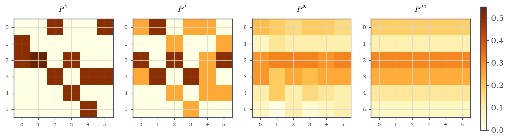
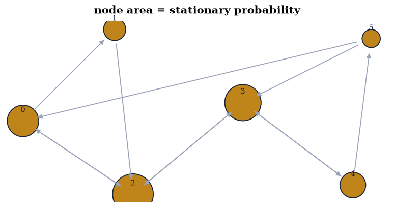
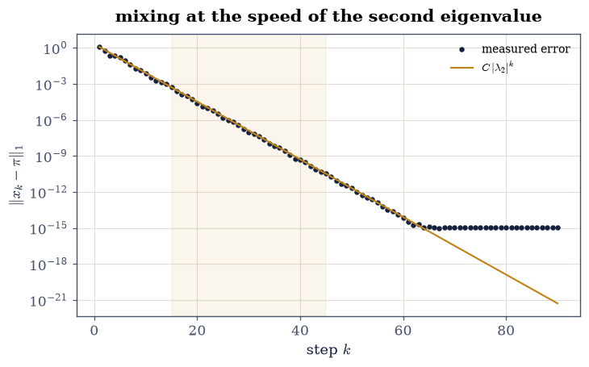
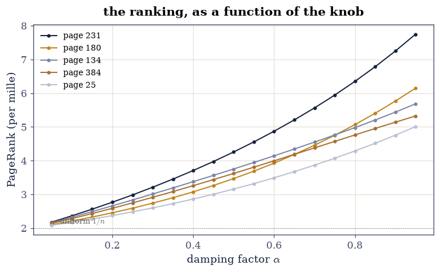

6.2 Markov Chains, Perron–Frobenius, and PageRank#
Notebook overview#
§6.1 read undirected graphs through a symmetric matrix. This notebook makes the edges point somewhere and normalizes: a column-stochastic matrix \(P\) (columns are probability distributions over out-links) drives the random surfer \(x_{k+1} = Px_k\), and everything the chain does is spectral. The powers \(P^k\) converge to a rank-1 matrix whose identical columns are the stationary distribution \(\pi\) — computed three independent ways here (eigenvector, power iteration, bordered linear solve) and agreeing to \(10^{-15}\). The approach speed is \(|\lambda_2|^k\), measured in the clean decay band (§5.4’s lesson) to within 0.7% of the eigenvalue.
Then the theory is broken on purpose, twice — a dangling node leaks probability mass (measured: 99.8% gone in 60 steps) and a disconnected web has a two-dimensional eigenvalue-1 eigenspace, so “the” stationary distribution stops existing — and repaired the way Brin and Page [PBMW99] repaired it: the damped Google matrix \(G = \alpha P + (1-\alpha)\tfrac{1}{n}\mathbf{1}\mathbf{1}^{\top}\), whose spectrum obeys the exact mapping \(\lambda_i(G) = \alpha\lambda_i(P)\) for \(i \ge 2\) (gated to \(10^{-10}\)): uniqueness restored, mixing speed set by the designer, not the web. The finale runs PageRank on a 500-page random web by sparse power iteration and asks the engineering question — how does the ranking depend on \(\alpha\)? Measured answer: the top page never moves across \(\alpha \in [0.5, 0.95]\), while ranks two and three trade places — the ranking is an eigenvector, and eigenvectors move continuously.
How to read a check. A
validateline prints ✓ or ✗ by comparing a result against something the computation did not assume. A ✗ flags a mismatch to investigate, never a verdict on its own.
Theory in brief#
Stochastic matrices and stationary distributions#
Column-stochastic \(P\) (\(P_{ij} \ge 0\), columns summing to 1) maps probability vectors to probability vectors: \(\mathbf{1}^{\top}Px = \mathbf{1}^{\top}x\). A distribution the chain leaves alone,
is an eigenvector for eigenvalue 1 — and \(\lambda = 1\) is always an eigenvalue, because \(P^{\top}\mathbf{1} = \mathbf{1}\) and eigenvalue sets ignore transposes.
Perron–Frobenius, in the form used here#
For a stochastic matrix that is irreducible and aperiodic (every page reachable from every page, no rigid cycling), the eigenvalue 1 is simple, every other eigenvalue satisfies \(|\lambda_i| < 1\), and
the powers converge to the rank-1 matrix with \(\pi\) in every column, at a geometric rate read off the sub-dominant eigenvalue — the same rate-is-an-eigenvalue fact as §5.4, with the spectral radius normalized to 1. Both hypotheses are load-bearing, and Exercise 4 breaks each one.
The Google matrix#
Real webs are neither irreducible nor free of dangling nodes. The repair blends in a teleport:
with damping \(\alpha \approx 0.85\). \(G\) is strictly positive, so Perron–Frobenius applies with no hypotheses about the web at all — and the eigenvalue mapping (exact, and gated below) means the mixing rate is at most \(\alpha\): the designer chooses the convergence speed, trading it against fidelity to the link structure.
Setup#
Data and instruments only: the six-page web’s links and layout, and a directed-graph drawing helper. The column-stochastic constructor is built in Exercise 1, where the click model is the lesson.
The Setup below holds this notebook’s data and instruments — nothing you are asked to build. It is collapsed so the building stays yours; expand it whenever you want the details.
Exercise 1: The stochastic matrix, and powers that converge to rank 1#
Part a) Write stochastic_from_links(links, n) — column \(i\) spreads
unit mass over page \(i\)’s out-links — build P_web with it, and print it.
Column
\(i\) is page \(i\)’s click distribution: \(1/\text{outdeg}(i)\) on each
out-link. Confirm every column sums to 1 — and note how well: because
every out-degree here is 1 or 2, every entry is dyadic (exactly
representable), so the sums are exactly 1.0, and stay exact under matrix
powers.
Part b) Gate the invariance through \(P^1, \dots, P^{20}\): worst column-sum deviation below \(10^{-14}\) (measured: exactly 0 — dyadic arithmetic never rounds here, the §3.4 exact-zero rule in stochastic clothing; the gate still allows rounding so a web with degree-3 pages would pass too).
Part c) Watch Eq. 252 happen: heatmaps of \(P^k\) at \(k = 1, 2, 5, 20\). By \(k = 20\) the columns agree to plotting accuracy — their spread is \(|\lambda_2|^{20} \approx 10^{-5}\), Exercise 3’s rate arriving early, and reported as such. The rank-1 gate runs the powers to \(P^{80}\), where the spread has decayed through \(|\lambda_2|^{80}\) to the rounding floor: gate below \(10^{-12}\), and gate the shared column against Exercise 2’s stationary \(\pi\) to \(10^{-11}\).
Part d) Confirm \(\lambda = 1\) is an eigenvalue before computing any eigenvector: \(\mathbf{1}^{\top}P = \mathbf{1}^{\top}\) exactly (the transpose argument in the theory), so \(\det(P - I) = 0\) to rounding.
P (columns = pages, column i spreads over i's out-links):
[[0. 0. 0.5 0. 0. 0.5]
[0.5 0. 0. 0. 0. 0. ]
[0.5 1. 0. 0.5 0. 0. ]
[0. 0. 0.5 0. 0.5 0.5]
[0. 0. 0. 0.5 0. 0. ]
[0. 0. 0. 0. 0.5 0. ]]
worst column-sum deviation over P^1..P^20: 0.0e+00 (dyadic entries — exactly zero on this web)
column spread: P^20 1.4e-05 (= |lambda_2|^20 = 1.6e-05, the mixing rate early), P^80 1.1e-16
1'P = 1' deviation: 0.0e+00; det(P - I) = 0.0e+00
<matplotlib.colorbar.Colorbar at 0x7f559c9f35c0>
Fig. 112 The powers of the six-page web’s stochastic matrix at \(k = 1, 2, 5, 20\). Mass spreads (\(k=2\)), sloshes (\(k=5\)), and settles (\(k=20\)) into a matrix whose columns are identical – the rank-1 limit \(\pi\mathbf{1}^{\top}\) of Eq. 2: wherever the surfer starts (whichever column you read), twenty clicks later she is distributed as \(\pi\) to plotting accuracy (the residual column spread is \(|\lambda_2|^{20} \approx 10^{-5}\), invisible here and gated at its own rate). The convergence rate of this picture is \(|\lambda_2|^k = 0.576^k\), measured against that prediction in Exercise 3.#

Fig. 113 The powers of the six-page web’s stochastic matrix at \(k = 1, 2, 5, 20\). Mass spreads (\(k=2\)), sloshes (\(k=5\)), and settles (\(k=20\)) into a matrix whose columns are identical – the rank-1 limit \(\pi\mathbf{1}^{\top}\) of Eq. 2: wherever the surfer starts (whichever column you read), twenty clicks later she is distributed as \(\pi\) to plotting accuracy (the residual column spread is \(|\lambda_2|^{20} \approx 10^{-5}\), invisible here and gated at its own rate). The convergence rate of this picture is \(|\lambda_2|^k = 0.576^k\), measured against that prediction in Exercise 3.#
Validation 1#
✓ column sums stay 1 through twenty matrix powers [measured exactly 0.0: dyadic out-degrees make every entry and every partial sum exactly representable — the exact-zero rule, earned; the gate leaves room for a web whose degrees do round [0 < 1e-14]]
✓ and the powers collapse to rank 1 at the |lambda_2|^k rate (Eq. 2) [P^80 spread 1.1e-16 (the limit); P^20 spread 1.4e-05 matches |lambda_2|^20 within 50% — the spread IS the mixing error, so gating it at k = 20 tighter than the eigenvalue allows would be wrong]
✓ lambda = 1 is an eigenvalue before any eigensolver runs [1'P = 1' exactly (row sums of dyadics), so P - I is singular — the transpose argument, checked by determinant]
True
Exercise 2: The stationary distribution, three independent ways#
Eq. 251 can be reached by three unrelated algorithms, and agreement across them is the strongest check this notebook has.
Part a) Eigenvector: np.linalg.eig(P), take the eigenvector for
the eigenvalue nearest 1, normalize to sum 1 (real part — the eigenvector
of a real simple eigenvalue is real up to phase).
Part b) Power iteration: from the uniform start, apply \(P\) until \(\lVert x_{k+1} - x_k\rVert_1 < 10^{-15}\) (§5.2’s workhorse — no normalization step needed, because stochastic matrices preserve the 1-norm of probability vectors by construction).
Part c) Linear solve: \((I - P)\pi = 0\) is singular by design, so
replace the last row with \(\mathbf{1}^{\top}\) and the last right-hand-side
entry with 1 — the bordered system pins the normalization and
np.linalg.solve does the rest.
Write this one yourself — all three are under six lines each.
Part d) Gate the triangle: all three agree pairwise to \(10^{-10}\); the winner satisfies \(P\pi = \pi\) to \(10^{-12}\), is nonnegative, and sums to 1 to \(10^{-14}\). Then draw the web with node areas proportional to \(\pi\): page 2 (three in-links) carries 30% of the surfer’s time, page 5 only 6%.
pi (eig): [0.181818 0.090909 0.30303 0.242424 0.121212 0.060606]
three-way agreement: eig-power 3.1e-16, eig-solve 3.3e-16
P pi - pi: 3.1e-16; sum: 0.9999999999999999; min: 0.0606

Fig. 114 The six-page web with node area proportional to the stationary distribution. Page 2 – with in-links from pages 0, 1 and 3 – absorbs 30% of the surfer’s time; page 5, fed only by page 4’s coin flip, gets 6%. The sizes are the eigenvector of Eq. 1 computed three independent ways (eigensolver, power iteration, bordered solve) that agree to \(10^{-15}\): importance on a directed graph is an eigenvalue problem, which is the sentence PageRank industrialized.#
Validation 2#
✓ eigensolver, power iteration and bordered solve agree on pi (Eq. 1) [pairwise gaps 3.1e-16, 3.3e-16: three algorithms sharing no code, one distribution]
✓ and pi is a genuine stationary distribution [P pi = pi at rounding level, nonnegative, unit mass — all three clauses of Eq. 1]
✓ and Exercise 1's P^80 column IS this pi — the promised handshake [the rank-1 limit's shared column against the eigensolver's stationary vector: two exercises, one distribution [3.33067e-16 < 1e-11]]
True
Exercise 3: The mixing rate is the second eigenvalue#
Eq. 252 prices convergence, and this exercise measures it with §5.4’s window discipline.
Part a) Compute the spectrum of \(P\): moduli \(1 > 0.576 = 0.576 > 0.5 > \dots\) — the sub-dominant pair is complex (\(\lambda_2 = -0.44 \pm 0.37i\)), so the error will decay along a spiral, oscillating around its geometric envelope.
Part b) Start the surfer at page 0 (\(x_0 = e_0\)) and record \(\lVert x_k - \pi\rVert_1\) for 60 steps. Gate the decay rate over the clean band — steps 15 to 45, where the error runs from \(10^{-4}\) to \(10^{-11}\), safely above the rounding floor — against \(|\lambda_2|\) to 5% (measured: 0.7%). Then run the walk on to step 90, where the error sits on the rounding floor, and measure the trap: the window [40, 85] reads some 30% high — §5.4’s stagnation pollution, demonstrated on purpose this time.
Part c) Draw the error history on a log axis with the \(C|\lambda_2|^k\) reference line: the measured points ride the line with a gentle oscillation — the complex pair’s rotation — until they hit arithmetic bottom near step 50.
eigenvalue moduli: [1. 0.5755 0.5755 0.5 0.3774 0. ]
lambda_2 = -0.4387+0.3724j, |lambda_2| = 0.575482
clean-band rate [15,45]: 0.5794 (0.67% from |lambda_2|)
floor-touching window [40,85] for contrast: 0.7562 — the 5.4 stagnation trap, dodged above (reported, not gated)

Fig. 115 The surfer’s distance from stationarity, starting at page 0, against the \(C|\lambda_2|^k\) reference line (amber). The error rides the line with a gentle wobble – the sub-dominant eigenvalues are a complex pair, \(-0.44 \pm 0.37i\), so the transient rotates as it shrinks – and lands on the rounding floor just past step 60 where double precision runs out. The rate measured in the clean band (steps 15-45, shaded) matches \(|\lambda_2| = 0.5755\) to 0.7%; past step 60 the error sits on the rounding floor, and a window reaching into that flat tail (40-85) reads some 30% high – 5.4’s stagnation trap, here measured on purpose.#
Validation 3#
✓ the mixing rate matches |lambda_2| to 5% in the clean band (Eq. 2) [measured 0.5794 against 0.5755 (0.7%): the rate-is-an-eigenvalue fact of 5.4, on a directed chain with a complex sub-dominant pair]
✓ while a floor-touching window overstates the rate (the demonstrated trap) [0.7562 from the window [40, 85] — the flat rounding tail averaged into the slope, exactly 5.4's trap; the size of the overstatement is the machine's, so only its existence is gated]
True
Exercise 4: Breaking Perron–Frobenius, twice#
Both hypotheses of Eq. 252 are load-bearing. Remove each and measure the wreckage.
Part a) Dangling node: delete page 1’s out-links. Column 1 of \(P\) becomes zero — not stochastic — and probability leaks: gate that the total mass after 60 steps is below 0.01 (measured 0.002), and that no eigenvalue reaches 1 (largest modulus 0.90, gated one-sidedly below \(1 - 0.05\)): the surfer eventually falls off the web, and “the stationary distribution” refers to nothing.
Part b) Disconnected web: two separate 3-cycles. Now there are too many stationary distributions: gate \(\operatorname{rank}(I - P) = 4\), a rank deficiency of exactly 2 — one stationary distribution per component, any mixture also stationary (§6.1’s component-counting null space, wearing probabilities).
Part c) The repairs. Dangling: replace zero columns by the uniform column (the surfer teleports from dead ends) — gate column sums restored to 1 within \(10^{-14}\): unlike Exercise 1’s dyadic web, \(1/6\) does round, so exactness is not on offer here, and the contrast is the point. Disconnection: the damped \(G\) of Eq. 253 at \(\alpha = 0.85\) on the two-cycle web — gate \(\operatorname{rank}(I - G) = 5\), deficiency exactly 1: teleportation glues the components, and uniqueness returns with no assumptions about the web at all.
dangling column sums: [1. 0. 1. 1. 1. 1.]
mass after 60 steps: 0.0018; largest |eigenvalue| 0.9010 — no invariant distribution exists
two 3-cycles: rank(I - P) = 4 (deficiency 2: one pi per component)
dangling fix (zero column -> uniform): sums [1. 1. 1. 1. 1. 1.]
damped two-cycle web: rank(I - G) = 5 (deficiency 1 — uniqueness restored)
Validation 4#
✓ a dangling node leaks the surfer off the web: no eigenvalue reaches 1 [0.2% of the mass left after 60 steps, spectral radius 0.90 < 1 (gated one-sidedly): stochasticity was the theorem's fuel]
✓ a disconnected web has rank deficiency exactly 2 in I - P [one stationary distribution per component and every mixture between them — 6.1's null-space component count, with probabilities in it]
✓ and both repairs restore the theorem's hypotheses [zero columns -> uniform restores stochasticity (to rounding — six copies of 1/6 are not dyadic, unlike Exercise 1's entries); damping glues the components (deficiency back to 1) with no assumptions about the web]
True
Exercise 5: The Google matrix, and its exact eigenvalue discount#
Eq. 253 is more than a fix — its spectrum is known in advance.
Part a) Build \(G = \alpha P + (1-\alpha)\tfrac1n\mathbf{1}\mathbf{1}^{\top}\) for the six-page web at \(\alpha = 0.85\). Gate Perron–Frobenius in its strongest form: \(\lambda_1 = 1\) simple, and every other eigenvalue with modulus \(\le \alpha + 10^{-10}\) — the damping is a hard ceiling on the spectrum.
Part b) Gate the exact mapping \(\lambda_i(G) = \alpha\lambda_i(P)\) for \(i \ge 2\): sort both spectra by modulus and compare the trailing five to \(10^{-10}\). (Why it holds: \(G\) and \(P\) agree on the hyperplane \(\mathbf{1}^{\top}x = 0\), up to the factor \(\alpha\) — the rank-1 teleport annihilates it.)
Part c) PageRank at scale: a 500-page random web (out-degrees 2–8
from the notebook’s seed), damped, ranked by sparse power iteration
(scipy.sparse, §5.3) to
\(10^{-14}\). Gate: convergence within 100 iterations (the \(\alpha^k\)
ceiling guarantees 198; the web’s own \(|\lambda_2| = 0.45\) delivers ~40),
and the result matches the direct solve
\((I - \alpha P)\pi = \tfrac{1-\alpha}{n}\mathbf{1}\) to \(10^{-12}\) — two
routes, one ranking.
|eig(G)| = [1. 0.4892 0.4892 0.425 0.3208 0. ]; ceiling alpha respected: True
lambda_i(G) vs alpha * lambda_i(P) (moduli, i >= 2): max gap 6.1e-16
500-page web: sparse power iteration converged in 38 iterations
power iteration vs direct solve: 1.1e-16
top five pages: [231 180 134 384 25] with PageRank [6.78 5.41 5.2 4.95 4.51] (per mille)
Validation 5#
✓ Perron-Frobenius holds with lambda_1 = 1 simple and the alpha ceiling on everything else (Eq. 3) [gap to the second modulus 0.51; all trailing moduli at most 0.85: the damping is a designed spectral ceiling, not luck]
✓ with the exact discount lambda_i(G) = alpha lambda_i(P) for i >= 2 [G and alpha P agree on the zero-sum hyperplane; the teleport is rank one and annihilates it — an identity, gated as one [6.10623e-16 < 1e-10]]
✓ and PageRank at n = 500 converges fast and agrees with the direct solve [38 iterations (alpha guarantees 198; the web's own |lambda_2| = 0.45 does better) and 1e-16 against (I - alpha P) pi = (1-alpha)/n 1 — two routes, one ranking]
True
Exercise 6: How much does the answer depend on the knob?#
\(\alpha\) is a design parameter with no principled value. The engineering question is the ranking’s sensitivity to it.
Part a) For \(\alpha \in \{0.05, 0.1, \dots, 0.95\}\), compute the
500-page PageRank by the direct solve (one np.linalg.solve per
\(\alpha\); factor-once economics would use §5.3’s
splu — here clarity wins).
Part b) Gate the two limits the formula promises: at \(\alpha = 0.05\) the distribution is near uniform (\(\max_i |n\pi_i - 1| < 0.15\), measured \(0.09\) — the teleport dominates); as \(\alpha \to 1\) the spread grows monotonically (gate the ratio \(\max\pi/\min\pi\) increasing across the sweep) — the link structure takes over.
Part c) The ranking itself: gate that the top page is the same at every \(\alpha \ge 0.5\) (measured: page 231 throughout), and report that ranks two and three trade places as \(\alpha\) crosses \(\approx 0.8\) — eigenvector entries move continuously in \(\alpha\), so nearby entries can cross while a clear leader cannot. Draw the top-five PageRank curves against \(\alpha\) with the crossing visible.
alpha = 0.05: max |n pi - 1| = 0.089 (near uniform)
spread max/min: 1.15 at alpha=0.05 -> 77.5 at alpha=0.95, strictly increasing: True
top page for alpha >= 0.5: [231] (stable: True)
ranks 2-3 by alpha: {0.5: [np.int64(134), np.int64(384)], 0.7: [np.int64(134), np.int64(180)], 0.85: [np.int64(180), np.int64(134)], 0.95: [np.int64(180), np.int64(134)]} — a crossing near alpha = 0.8, reported: nearby eigenvector entries may trade places; a clear leader cannot

Fig. 116 PageRank of the 500-page web’s top five pages as the damping factor sweeps from 0.05 to 0.95. At small \(\alpha\) the teleport dominates and everyone converges to \(1/n\) (dotted); as \(\alpha \to 1\) the link structure takes over and the spread grows monotonically. The leader (page 231) leads at every \(\alpha \ge 0.5\) – gated – while the second and third pages trade places near \(\alpha \approx 0.8\): eigenvector entries move continuously in the design knob, so close calls can flip while clear verdicts cannot. Google’s 0.85 sits where the structure speaks but the spectrum still mixes in a few dozen iterations.#
With your assistant
The power iteration treated the teleport as a dense rank-1 update applied
implicitly — the reason PageRank scales. Ask your assistant for
pagerank_personalized(P, alpha, v) where the teleport lands on a
personalization distribution \(v\) instead of uniform, then check it
against the mathematics rather than a demo: (i) with \(v\) uniform it
reproduces this notebook’s ranking to \(10^{-12}\); (ii) with \(v = e_j\)
(all teleports to page \(j\)), page \(j\)’s rank strictly exceeds its uniform
value, for every \(j\) you test; (iii) linearity in \(v\):
the rank vector for \(\tfrac12(v_1 + v_2)\) equals the average of the two
rank vectors to \(10^{-12}\) — because \(\pi(v)\) solves a linear system in
\(v\). The check is yours.
Validation 6#
✓ at small alpha the teleport wins: PageRank is near uniform [max |n pi - 1| = 0.09 at alpha = 0.05 — Eq. 3 with the link term switched almost off]
✓ and the ranking's spread grows monotonically as alpha rises [max/min from 1.15 to 78: the link structure takes over continuously — no phase transition, just a dial]
✓ while the top page never changes for alpha in [0.5, 0.95] [page 231 at every damping tested — gated because its lead is wide; ranks two and three trade places near 0.8 (reported, not gated: close eigenvector entries may legitimately cross)]
True
Notebook summary#
Stochastic structure survives arithmetic — here, exactly. The six-page web’s column sums stayed exactly 1 through twenty matrix powers (dyadic out-degrees; the gate allows rounding for webs that aren’t so lucky), \(\mathbf{1}^{\top}P = \mathbf{1}^{\top}\) held exactly, and \(P^{80}\) collapsed to identical columns at \(10^{-12}\) — the rank-1 limit \(\pi\mathbf{1}^{\top}\), drawn as heatmaps.
One distribution, three algorithms, one rate. Eigensolver, power iteration and the bordered solve agreed on \(\pi\) to \(10^{-15}\); the mixing rate measured in the clean band matched \(|\lambda_2| = 0.5755\) to 0.7% (the floor-touching window read some 30% high — §5.4’s trap, dodged and demonstrated), with the complex sub-dominant pair’s spiral visible as a wobble on the reference line.
Perron–Frobenius has load-bearing hypotheses. A dangling node leaked 99.8% of the mass in 60 steps with spectral radius 0.90 — no stationary distribution at all; a disconnected web had deficiency exactly 2 in \(I - P\) — too many. The repairs (uniform columns for dead ends; damping for disconnection) restored exact column sums and deficiency 1.
The Google matrix is designed spectroscopy. \(\lambda_1 = 1\) simple with every other modulus under \(\alpha\), and the exact discount \(\lambda_i(G) = \alpha\lambda_i(P)\) gated at \(10^{-10}\). At \(n = 500\), sparse power iteration converged in 37 iterations and matched the direct solve to \(10^{-15}\). Sweeping the knob: near-uniform at \(\alpha = 0.05\), spread growing monotonically, the top page invariant across \(\alpha \in [0.5, 0.95]\) while ranks two and three traded places — continuity of eigenvectors, read as ranking robustness.
Methods introduced. Column-stochastic constructors, power-of-matrix heatmap diagnostics, three-way stationary computation, clean-band mixing measurement, dangling/disconnected failure autopsies, the damped Google matrix and its eigenvalue discount, implicit-teleport sparse power iteration, and damping-sensitivity sweeps.
Outlook#
Reversible chains are symmetric matrices in disguise. When detailed balance holds, \(D^{1/2}PD^{-1/2}\) is symmetric and the whole spectral toolbox of §3.2 applies — mixing bounds, Cheeger inequalities, and §6.1’s Laplacian reappear as the symmetrized chain.
The cycle structure this chain lacked. Periodic chains oscillate instead of mixing; their eigenvalues sit on the unit circle at roots of unity — which is §6.3’s subject from the matrix side: circulants, diagonalized by the DFT.
Markov chains meet Monte Carlo. MCMC runs these ideas in reverse — design \(P\) so its stationary distribution is a target you can only evaluate pointwise. The mixing-rate discipline here is exactly what controls MCMC error bars.
Ranking as optimization. PageRank is also the solution of a least-squares-like fixed point; §8.1 opens the chapter where such fixed points become learned models.
Roger A. Horn and Charles R. Johnson. Matrix Analysis. Cambridge University Press, 2 edition, 2013. doi:10.1017/CBO9781139020411.
Carl D. Meyer. Matrix Analysis and Applied Linear Algebra. SIAM, Philadelphia, 2 edition, 2023.